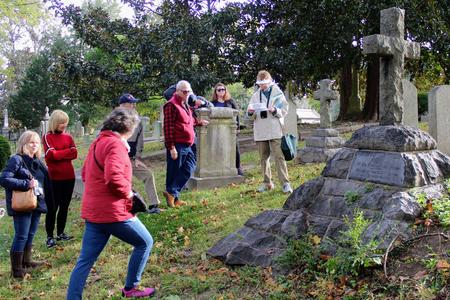
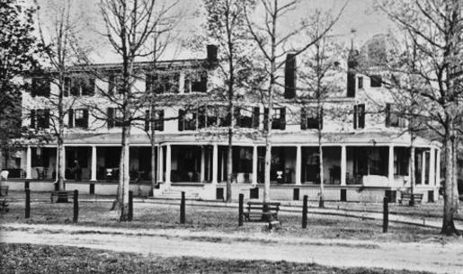
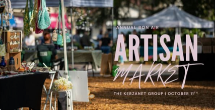
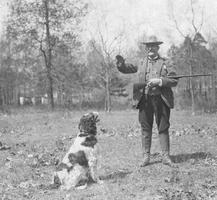
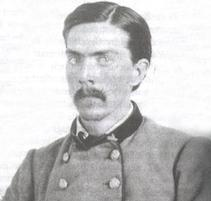
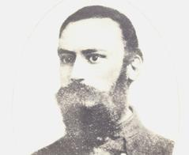

Programs, walks & talks
Explore the stories behind Bon Air.
Members enjoy programs, walks, talks, our annual Christmas party, Valentine’s Day tea, and ice cream social.
Become a memberBon Air, Virginia
Since 1978 members have celebrated the history of Bon Air. Be a part of the tradition and join us.

Our History
The Bon Air Historical Society, organized in 1978, is the Oldest Historical Society in Chesterfield County, Virginia. It is dedicated to the preservation of Bon Air, its history, its architecture and the story of its remarkable residents over the past 130 years.
Conceived in 1877 as a rural summer retreat for city dwellers, Bon Air retains much of its original character from shady, tree-lined streets and large front yards to the beautiful old houses and friendly faces you will encounter throughout the area.
“We all leave something where we live. It may be a spiritual influence just as mysterious as you like. We all leave some mark and it is up to you and to me what kind of mark that will be. It is in the houses and in the memories of the people who have lived here.”
Dr. C. M. Hazen
In 1877, local railroad and business investors formed the Bon Air Land and Improvement Company to develop the area’s rolling hills and hardwoods as a Victorian resort. Guests arrived by rail to stay at the Bon Air Hotel, the Hotel Annex, and later the Bon Air Inn.
Dancing at the Pavilion, picnics and boating at Forest Hill Park or Jahnke’s Lake, croquet, lawn tennis, and archery made Bon Air a popular destination. Many visitors later built Victorian cottages here; many remain among the village’s historic homes.
Bon Air is recognized by federal and state governments as a Historic District and by Chesterfield County as a Historic Area. The society supports educational and social programs, including home and garden visits and tours of places such as Hollywood Cemetery, Battle Abbey, and the Valentine Richmond History Center.
Each May, the annual Victorian Day Festival and Parade brings antique cars, marching bands, flag-waving spectators, food, games, and family entertainment to Buford Road in Old Bon Air.
Programs & Events
Check out the Programs and Events page for Upcoming Events.

Programs, walks & talks
Members enjoy programs, walks, talks, our annual Christmas party, Valentine’s Day tea, and ice cream social.
Become a member
Sunday, November 8, 2026 at 2 PM – 5 PM
8707 Forest Hill Avenue, Richmond, VA, United States, Virginia 23235
Current program
Join a docent-led personal tour of the Poe Museum, expected to last about 45 minutes. Station 2 restaurant is one block away for anyone who would like to walk over for lunch afterward.
Please email the Bon Air Historical Society 150 Anniversary address to RSVP.
Notable Bon Air Residents
These Bon Air residents helped shape the region's cultural, medical, and civic history.

A pharmacist and nationally known musician, Miller founded Sergeant's Pet Care Products. He named the company for his favorite dog, pictured with him in the society's historic photograph.

Dr. McGuire, a close friend of Gen. Thomas “Stonewall” Jackson, became chief surgeon of Jackson's Corps in the Army of Northern Virginia in 1862. He amputated Jackson's left arm after the 1863 friendly-fire wounding at Chancellorsville, an unsuccessful attempt to save his life.
After the Civil War, he helped establish Richmond schools and hospitals that became part of the Medical College of Virginia.
His statue stands at the Virginia State Capitol, the McGuire Veterans Administration Medical Center bears his name, and his Bon Air summer home, designed by his son, remains on Buford Road.

Stiles enlisted while studying law in 1861. He was discharged for promotion in 1865, commissioned into the U.S. Volunteers that same day, and captured at Sayler's Creek. He was held at Johnson's Island, Ohio, where he said he took the oath of allegiance with his fingers crossed.
After the Civil War, he practiced law and served as president of the Prison Association of Virginia.
In 1883, he built his Bon Air summer home, Dinglewood. The cottage still stands on Buford Road.
About Us
2026–2027 Executive Committee
At-large board members
Elizabeth Richardson (Historian), Loretta Sherwood, Emily Boots, and Carrie Loudy
Join
Help support the Bon Air Historical Society's work to preserve and present the history of Bon Air, Virginia. You get all this and more for just $20 for an individual or family membership.
Individual Membership or Family Membership
If renewing, please send a $20 check with your name to:
BAHSLinks
Explore local history, regional institutions, and digitized collections.
Contact Us
Want to join us or need research assistance? Send us a message. If needed, you will hear back within 48–72 hours.
Bon Air Historical Society